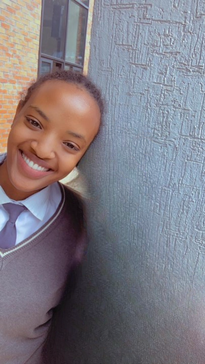
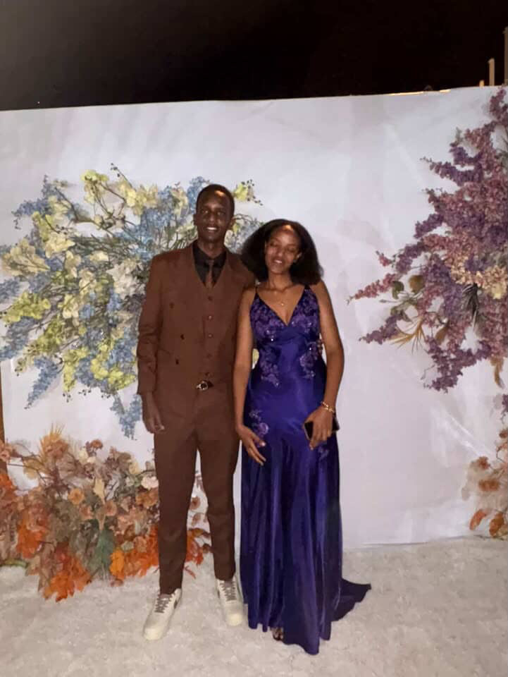

Hi, Melissa
⬅
Our Story 💖
I: Before You

II: We meet
III: We are together!🥳

IV: The Break
V : Friends
VI: Today
So....
Umugwaneza Melissa, carry our candles together?
Yes 💖
No 😏
Best decision ever 😍